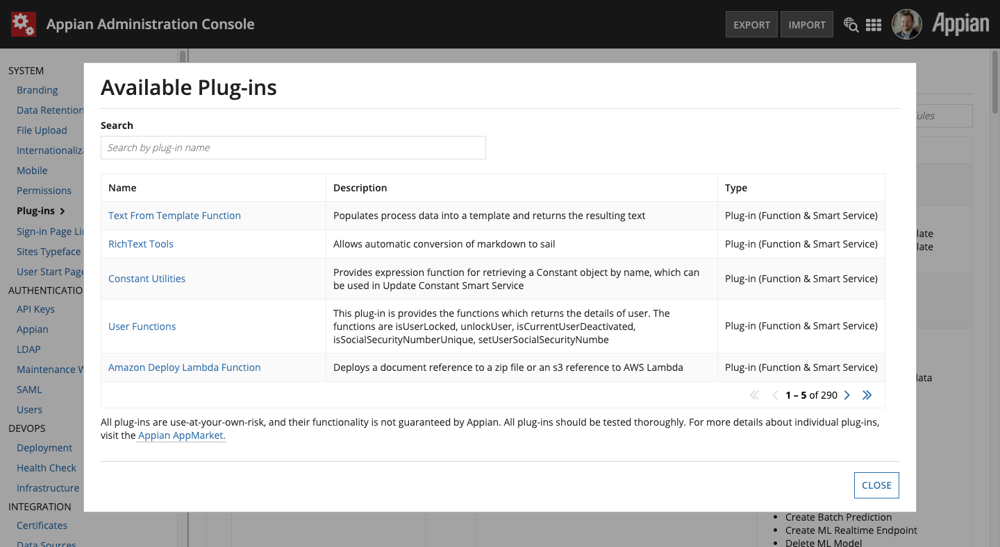

Introduction¶
This plugin provides an Expression Function called linearGradientImage() for generating simple, linear gradient PNG images based on the colors, distribution ratios, and dimensions you specify.

As seen above, the function returns an Appian Document data type which can be used in places such as an a!documentImage() or even linked to.
The genesis for this plugin was to provide gradient color backgrounds for a Billboard Layout component’s backgroundMedia value. A companion Appian Application is distributed with the plugin that includes Expression Rules and Interfaces for easy configuration of Billboard Layouts using this plugin.
Note that this companion application requires the Color Picker Component plugin.

Performance¶
To ensure high performance, the function will cache the generated images in Appian’s document management system and return existing images on subsequent calls (based on a file naming convention) rather than generating the same image over and over.
Initial image generation usually takes 100 - 200 milliseconds, and subsequent calls that return the existing images usually take less than 10 milliseconds.
You may wish to generate the image in a lower environment (e.g. DEV) and copy/move the image into your application as well, however the speed at which the plugin returns existing images is comparable to directly referencing an image using a Constant.
Compatibility¶
This plugin and its companion application were built and tested on Appian version 20.2.
Installation¶
If installing to a fully-managed Appian Cloud instance, install using the Plugins panel of the Administration Console.
If installing to a self-managed Appian instance, copy the GradientImageGenerator-1.0.jar plugin JAR file to the <APPIAN_HOME>/_admin/plugins directory.
Import the companion Generate Gradient Image Companion App 1.0.zip application as normal in your Appian instance.